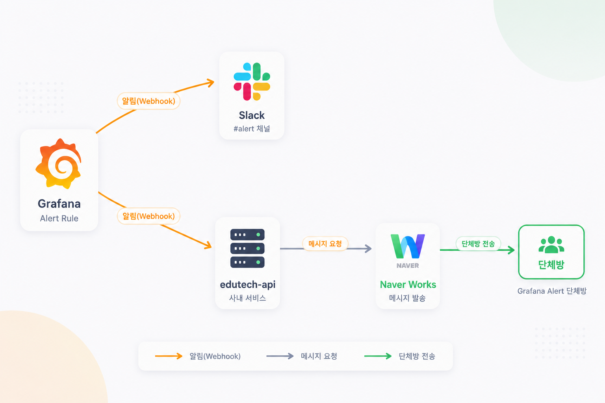
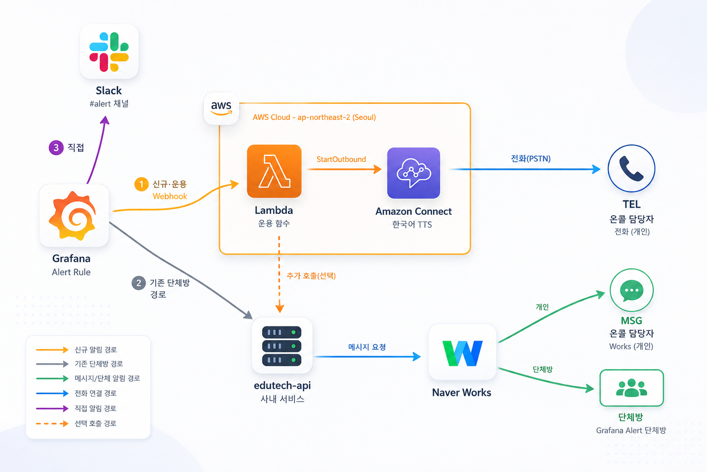

01배경 / 개요
기존에는 Grafana 알림이 Slack과 Naver Works 단체방으로만 전달되었습니다.
AS-IS
Grafana Alert Rule → Slack #alert 채널 / edutech-api(사내 서비스) → Naver Works 단체방
- 채팅방 기반이라 야간·휴일에 담당자가 즉시 인지하기 어려움
- 누가 알림을 확인했는지, 어떤 알림이 있었는지 이력 관리 수단 부재
- 서비스별 담당자 구분 없이 전체 방에 일괄 전달
TO-BE
기존 경로(Slack · 단체방)는 그대로 유지하고, 온콜 경로(전화 + 개인 메시지)를 병렬로 추가
- 서비스 → 그룹 → 담당자 자동 라우팅
- critical 알림은 담당자에게 전화, 전체는 개인 메신저로 전달
- 통화 응답 여부 / 발신 멘트 / 알림 이력을 DynamoDB에 적재하고 대시보드로 조회


02전체 아키텍처
알림 처리(서버리스) · 이력 적재(이벤트 스트림) · 관리 대시보드(EKS) 3개 영역으로 분리했습니다.
※ 상세 아키텍처 이미지는 위 TO-BE 다이어그램, 통화 이력 적재 흐름은 4장을 참고.
구성 요소
| 구성 요소 | 역할 |
|---|---|
| 알림 Lambda Python | Grafana Webhook 수신(시크릿 헤더 인증) → 서비스·그룹·담당자 라우팅 → Works 발송 → 전화 발신 여부 판정 → Amazon Connect 발신 → 이력 선기록 |
| Amazon Connect | API 기반 아웃바운드 호출(StartOutboundVoiceContact) + 한국어 TTS(Seoyeon). 한글 발음 사전으로 서비스명/영문 알림명을 읽기 좋게 변환 |
| Kinesis + CTR 컨슈머 Lambda | 통화 종료 시 CTR(Contact Trace Record)을 실시간 스트리밍으로 수신하여 ANSWERED / NO_ANSWER / BUSY / FAILED 판정 및 이력 갱신 |
| DynamoDB (3 테이블) | 담당자(oncall_user), 서비스→그룹 매핑 + 킬스위치(oncall_service_groups), 통화/알림/감사 이력(oncall_call_log) |
| edutech-api 연동 | 사내 서비스를 경유한 Naver Works 개인 메시지 + 단체방(담당자 @멘션) 발송 |
| n8n + AI Agent | critical 발신 시 비동기로 원인 분석 요청 → 결과를 콜백으로 수신해 이력에 반영 |
| OnCall Dashboard EKS | FastAPI + 바닐라 ES 모듈 웹 서비스. 이력/KPI 시각화, 담당자·그룹 관리, 킬스위치, 감사 로그, Grafana 규칙 조회 |
03알림 처리 흐름
Grafana 알림 1건이 들어오면 Lambda가 아래 순서로 판정·처리합니다.
전화 발신 판정 — 우선순위 게이트
모든 게이트를 순서대로 통과해야만 전화가 나가며, 막힌 경우에도 Works 발송과 이력(WORKS_ONLY)은 반드시 남깁니다.
주요 설계 포인트
1인 1통 집계
여러 알림이 동시에 와도 수신자 기준으로 병합. 여러 서비스를 담당하는 사람에게는 한 통의 전화에서 모든 서비스를 안내합니다.
fail-open / fail-safe 구분
DynamoDB 조회 실패 시에는 알림이 끊기지 않도록 fail-open, 재개 시각 파싱 오류처럼 판단이 모호한 경우는 전화를 막는 쪽으로 fail-safe 처리했습니다.
알림 단위 생명주기 추적
fingerprint 단위로 firing → resolved 전이를 기록하여 알림의 발생·해소 시각을 이력화했습니다.
데이터 기반 라우팅
담당자·서비스 매핑을 코드 하드코딩에서 DynamoDB로 이관하여 재배포 없이 대시보드에서 변경할 수 있게 했습니다.
04통화 이력 적재 메커니즘
“전화를 받았는가?”를 확정적으로 판별하기 위해 Connect CTR을 Kinesis로 스트리밍합니다.
1 발신 요청
알림 Lambda가 Amazon Connect에 전화 발신을 요청합니다.
2 전화 연결
Connect가 온콜 담당자에게 실제 통화를 연결합니다.
3 PENDING 선기록
발신 즉시 DynamoDB에 PENDING 상태로 선기록합니다 (PutItem).
4 통화 종료 CTR
통화가 끝나면 응답 여부가 담긴 CTR이 Kinesis로 발행됩니다.
5·6 판정 및 갱신
CTR 컨슈머 Lambda가 응답/미응답을 판정해 이력 상태를 갱신합니다.
7 대시보드 조회
대시보드는 DynamoDB만 조회합니다.
기술 선택 배경
검토했으나 제외한 방식
CheckOutboundCallStatus 블록은 캠페인 전용이라 단건 API 발신에는 적용할 수 없음을 확인했습니다. 폴링 방식은 지연·누락 위험이 있어 제외했습니다.
채택한 방식
CTR의 ConnectedToSystemTimestamp 유무와 DisconnectReason으로 응답 여부를 판정하고, Kinesis 이벤트 기반으로 즉시 반영합니다.
call_status 판정 규칙
| 상태 | 조건 |
|---|---|
| PENDING | 발신 직후 선기록, CTR 도착 전 |
| ANSWERED | CTR에 고객 단말 응답 시각 존재 |
| NO_ANSWER | 응답 없음 + 타임아웃/취소/미응답 계열 사유 |
| BUSY / FAILED | 통화중 / 번호 오류·차단 등 |
| WORKS_ONLY | 전화 미발신(warning, 해소, 킬스위치, 억제 등) — Works만 발송 |
05데이터 모델 (DynamoDB)
테이블 수를 최소화하기 위해 PK 접두어(네임스페이스)로 엔티티를 구분했습니다.
| 테이블 | PK 네임스페이스 | 용도 |
|---|---|---|
oncall_user | PERSON#<전화> | 담당자(이름·이메일·담당 그룹·활성 여부·사번) |
oncall_service_groups | SERVICE#<서비스>SYSTEM#KILL_SWITCH | 서비스→그룹 매핑 / 시스템 설정(킬스위치) |
oncall_call_logGSI: phone_index, call_status_index | CONTACT# | 전화 연결 이력 |
NOTIFY# | Works 전용 알림 이력 | |
ALERT# | 알림 이벤트 단위 생명주기 + AI 요약 | |
AUDIT# | 관리자 활동 감사 로그 |
단일 테이블 다중 엔티티
신규 테이블 생성을 지양하는 환경 제약 속에서, 킬스위치·감사로그를 기존 테이블에 접두어로 수용했습니다.
GSI 활용
전화번호별 최근 이력(통화 억제), 상태별 조회(미응답 목록)를 GSI로 처리합니다.
On-Demand 과금
알림 발생 패턴이 불규칙하므로 PAY_PER_REQUEST를 사용합니다.
06OnCall Dashboard
기존 단일 HTML 대시보드를 FastAPI 기반 독립 웹 서비스로 전환하여 EKS에 배포했습니다.
기능
- 대시보드 — KPI(수신율 등), 그룹별/시간대별 차트, Oncall 이력, Alert 이력
- Alert 규칙 — Grafana 규칙 실시간 조회(critical_level 기준 정렬)
- Oncall 담당자 — CRUD
- 관리 — 서비스 그룹 관리, 수기 발송, 킬스위치(“OnCall 시스템 일시 중단”), 관리자 로그
- AI 이슈 요약 — 증상 / 원인 / 조치 결과 모달
기술 / 보안
- FastAPI + boto3, 프론트는 빌드리스 ES 모듈(서버측 partial include 조립)
- IRSA로 DynamoDB 접근 — 컨테이너에 장기 키를 두지 않음
- 서버측 PII 마스킹(이름·전화), 마스킹 해제는 로그인 필수
- HMAC 서명 세션 토큰, 쓰기 API 인증, 모든 변경 감사 로그
- JSON 구조화 로깅 + W3C trace 컨텍스트
- Liveness(
/healthz) / Readiness(/api/health) 분리
배포 파이프라인
yyyyMMddHH-mmss07AI 이슈 요약 파이프라인
전화가 실제로 발신되는 critical 알림에 대해서만 비동기로 원인 분석을 요청합니다.
alert_id 상관관계
Webhook 1회 = alert_id 1개. 수신자별이 아닌 “이슈 단위” 분석을 공유합니다.
비용/소음 제어
동일 그룹 10분 내 중복 요청을 억제하고, 전화가 나가는 건에 한정해 호출합니다.
기존 인프라 재사용
신규 Lambda 없이 CTR 컨슈머에 Function URL 트리거를 추가(이벤트 형태로 분기).
08현재 사용 중인 방식 (운영)
현재 운영 환경에서 실제로 사용하고 있는 방식입니다.
| 영역 | 방식 |
|---|---|
| 알림 수신 | Grafana Contact Point(Webhook) → Lambda Function URL, 시크릿 헤더 인증 |
| 라우팅 | 라벨(namespace > container > pod > job) 기반 서비스 추출 → DynamoDB 그룹/담당자 조회 (5분 캐시) |
| 알림 채널 | critical = 전화 + Works / warning = Works 전용 / resolved = Works 해소 안내 |
| 운영 제어 | 대시보드 킬스위치(캐시 20초 → 최대 20초 내 반영), 재개 시각 자동 복귀 |
| 이력 관리 | DynamoDB 적재 + 대시보드 조회, 관리자 변경은 감사 로그 |
| 코드 배포(Lambda) | zip 업로드 (공용 모듈 call_log.py를 2개 Lambda에 함께 배포) |
| 코드 배포(Dashboard) | Docker → ECR → Helm 태그 갱신 → ArgoCD Blue/Green |
| 인프라 정의 | AWS CDK(Python) 초기 프로토타입 + 콘솔/CLI 구성 (운영 반영은 수동 배포) |
| 문서화 | 동작 흐름 문서를 코드 기준으로 유지(플로우 변경 시 동시 갱신), 인수인계용 문서 세트(개요·아키텍처·스키마·API·배포·컨벤션) |
메트릭 기반 알림 기준 정립 (SRE)
SRE 4 Golden Signals(Latency · Traffic · Errors · Saturation) 기준으로 클러스터에서 수집 가능한 메트릭(OTel 표준 http_server_request_duration_seconds 등)과 PromQL을 실측 검증하여 알림 룰 작성 기준 문서로 정리했습니다.
09수행 내용
기획부터 운영까지 단독으로 수행했습니다.